Founded in 1994, BYD is a high-tech company devoted to leveraging technological innovations for a better life. After more than 31 years of rapid growth, BYD has played a significant role in industries related to electronics, auto, renewable energy and rail transit. With a focus on energy acquisition, storage, and application, BYD offers comprehensive zero-emission new energy solutions. As a company listed on both the Hong Kong Stock Exchange and Shenzhen Stock Exchange, its annual revenue in 2024 exceeds RMB 700 billion.
Argentina · Barbados · Bolivia · Brazil · Chile · Colombia · Costa Rica · Curacao · Dominican Republic · Ecuador · El Salvador · Guatemala · Jamaica · Mexico · Panama · Paraguay · Peru · Suriname · Trinidad and Tobago · The Bahamas · Uruguay
Bahrain · Benin · Côte d'Ivoire · Ethiopia · Gabon · Israel · Jordan · Kenya · Kuwait · Lebanon · Madagascar · Mauritius · Morocco · Nigeria · Oman · Palestine · Qatar · Reunion (FR.) · Rwanda · Saudi Arabia · Senegal · Seychelle · South Africa · Tunisia · United Arab Emirates · Zambia · Zimbabwe
Austria · Belgium · Croatia · Czech Republic · Denmark · Estonia · Finland · France · Germany · Greece · Hungary · Iceland · Ireland · Italy · Latvia · Lithuania · Luxembourg · Malta · Netherlands · Norway · Poland · Portugal · Romania · Serbia · Slovak Republic · Spain · Sweden · Switzerland · Turkey · United Kingdom
Australia · Bangladesh · Bhutan · Brunei · Cambodia · Mainland China · Hong Kong China · India · Indonesia · Japan · Laos · Macau China · Malaysia · Mongolia · Myanmar · Nepal · New Zealand · Pakistan · Philippines · Polynesia · Singapore · South Korea · Sri Lanka · Thailand · Vietnam · Kazakhstan · Uzbekistan · Tajikistan
BYD has developed the Blade Battery and dual-mode hybrid power technology, accelerating the once-in-a-century transition from fossil fuel powered vehicles to electric vehicles.
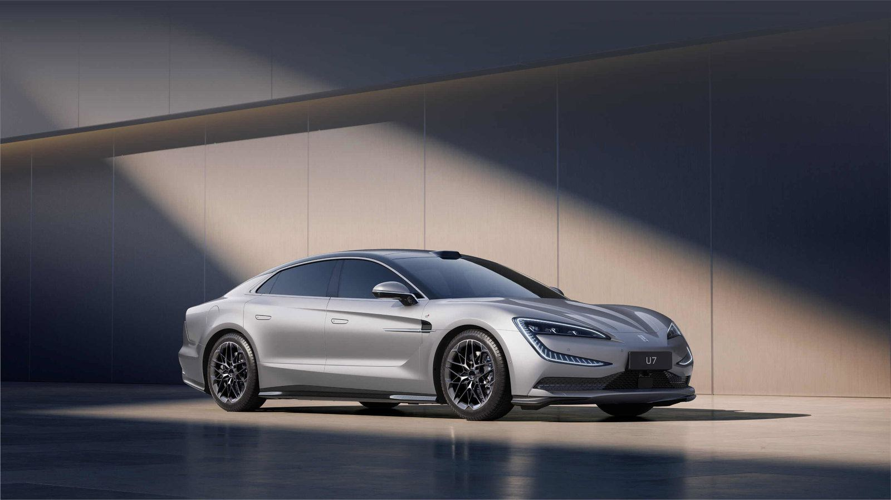
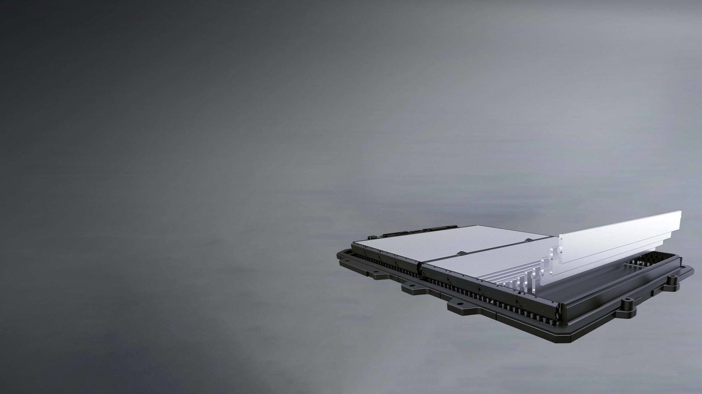
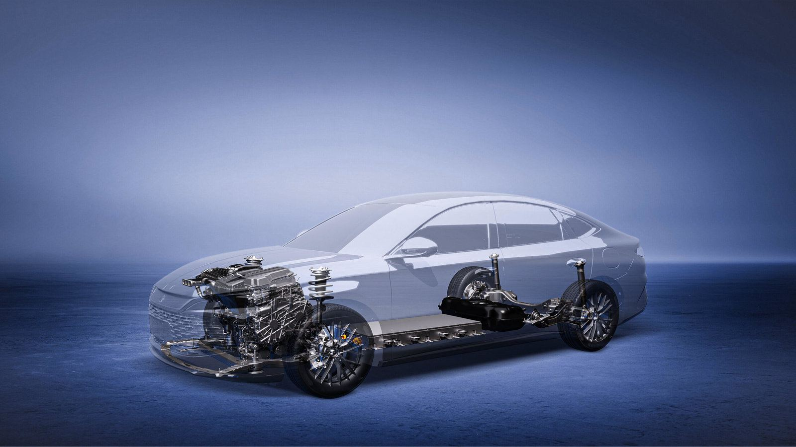
0-100km/h acceleration in 4.3 seconds
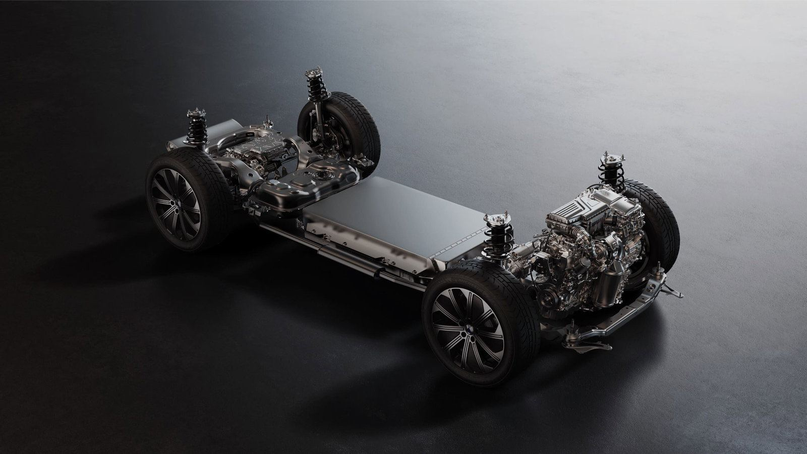
Safety, high efficiency, intelligence and aesthetics
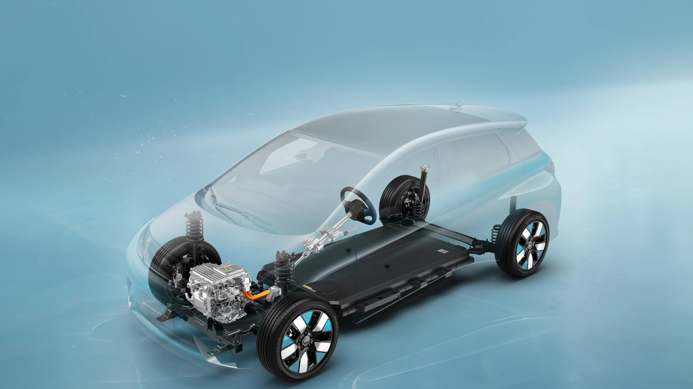
Seamlessly integrates smartphone functions into the vehicle's platform
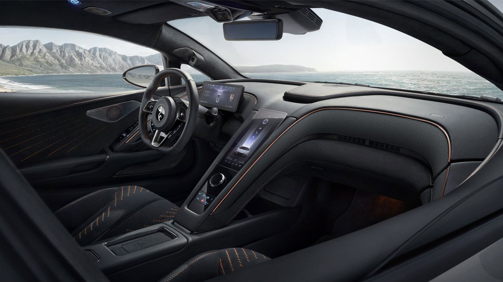
The innovative distributed drive structure in the new energy vehicle industry reforms the traditional automotive power system from three dimensions: perception, decision-making, and execution.
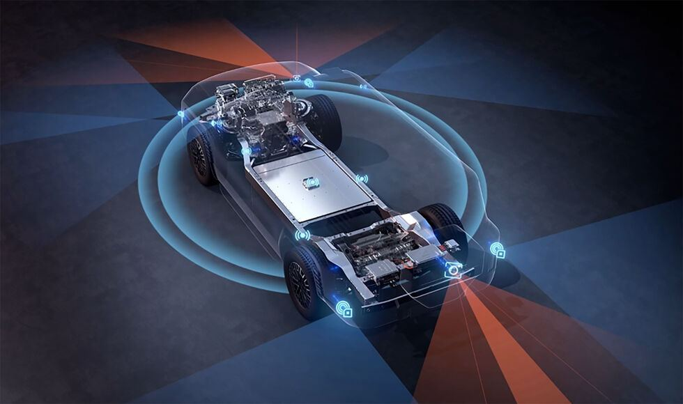
The DMO platform is BYD's technological masterpiece and versatile solution. Having integrated over 20 years of BYD Group's technological advancements, it has shattered the limits of using new energy vehicles in various scenarios. It now serves as a hub for creating models for multiple sectors, catering to different scenarios and operating conditions.
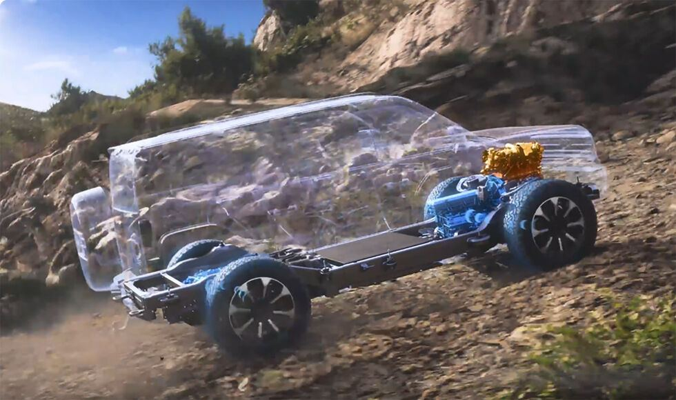
Industry's First, New Energy-Exclusive, Self-Developed
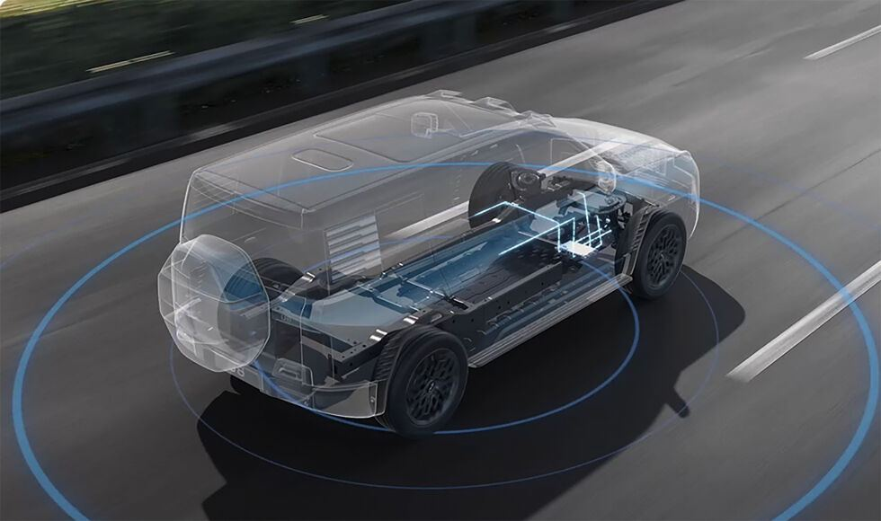
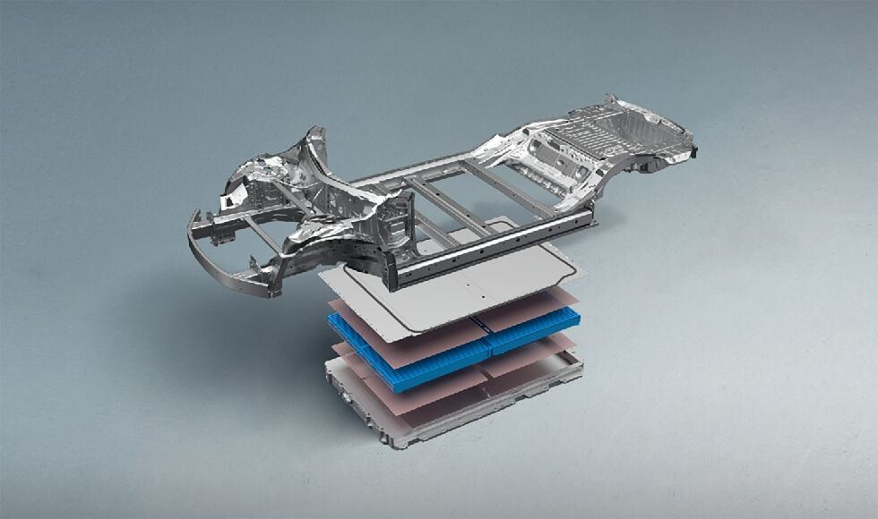
Numerous challenging tests for top quality
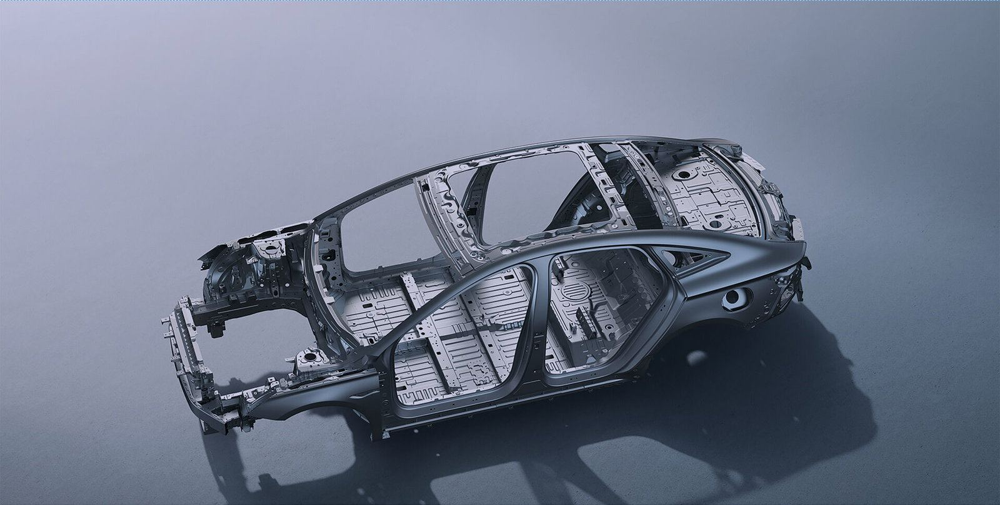
BYD DOLPHIN MINI
BYD DOLPHIN PLUS
BYD ATTO 3, BYD DOLPHIN and BYD SEAL
BYD ATTO 3, BYD SEAL and BYD DOLPHIN (Australian versions)
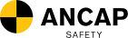
BYD ATTO 3 and BYD DOLPHIN
As of the end of April 2025, BYD's cumulative new energy vehicle (NEV) sales exceeded 11.9 million units. In the first half of 2023, BYD ranked among the global top 10 in new car sales. On November 18, 2024, BYD became the world's first automaker to produce 10 million NEVs.
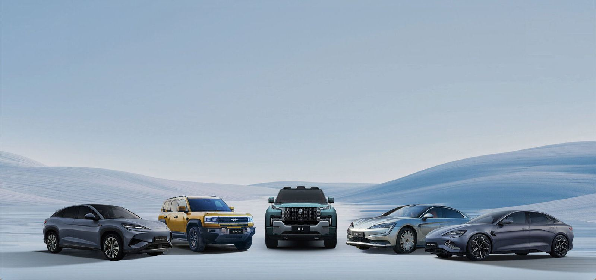
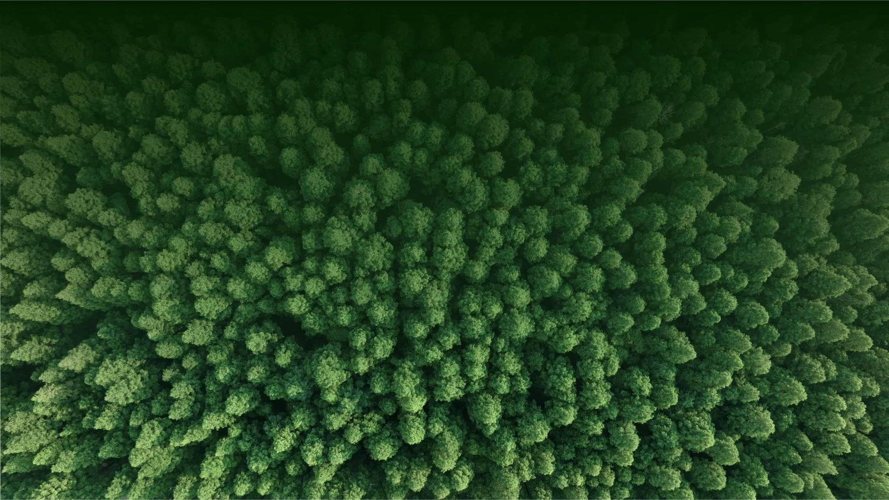
Cool the Earth By 1℃